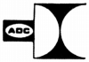 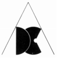
ADC
アメリカのカートリッジのブランド。ADCはAudio Dynamica Corporation の頭文字である。IM（インデュースド・マグネット）型カートリッジの代表的ブランド。ブランド初期にはMM型を手がけていたが、シュアーがMM型の特許を取得後、IM型に転身した。早期から軽針圧のカートリッジを出したブランドでもある。1970年頃の代理店は「今井商事」、1975年頃には「ビー・エス・アール(BSR)ジャパン」に変更 、1989年頃には�海TIジャパンとなった。 1990年代初頭に国内市場からは撤退した模様。
なお、アメリカのADC本社はBSRに買収され、創業者のPritchard氏が、その後立ち上げたSonic Research社のブランドが、「SONUS(ソナース）」である。
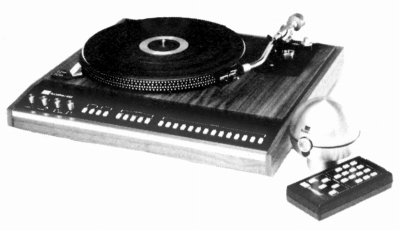
(Acctrac4000 1970年代末のアナログプレイヤー すでにリモコン対応だった。）
�T.カートリッジ1.IM型
シュアーのMM型特許回避の為同社が転向したのがIM型。MM型よりカンチレバーに取り付ける磁性体が軽い為、軽針圧カートリッジが作り易い。
�@60年代のモデル
シュアーのMM型特許成立後登場したのがPOINT4。その他70年代初頭のモデルの原型が登場している。
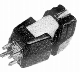
（POINT4）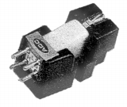
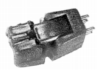
（左 10E 右 660)�A70年代初頭のモデル
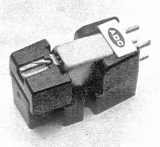
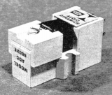
(660XE)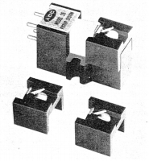
(3種の針が付属する25)�BXLMシリーズ
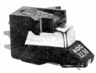
(XLM)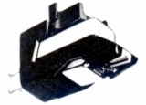
(Super XLM/�U)XLM/�U Super XLM/�U XLM/�U Improved
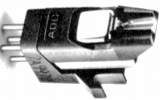
(XLM/�V)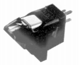
(XLM/�W)�CVLM/ＺLMシリーズ
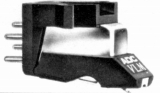
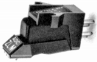
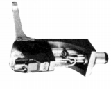
(ZLM Improved)�DQシリーズ
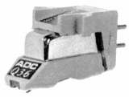
(Q36)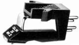
(QLM36/�U)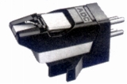
(QLM32/�V)QLM30/�V QLM32/�V QLM33/�V QLM34/�V QLM36/�V
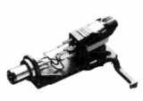
(QLM36/�V Improved)QLM30/�VE.P. QLM31/�VE.P. QLM36/�V Improved
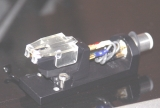
�E一体型
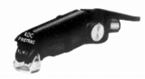
(Protrac XLM/2)Protrac XLM/1 Protrac XLM/2 Protrac XLM/3
�FPSXシリーズ
1983年スタートの入門〜中級機シリーズ。手元資料では確認できないが、形状及び針圧設定から考えて、T4P規格の製品なのかもしれない。
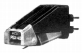
(PSX-40)�GTRXシリーズ
このブランド最後の高級機シリーズ。各所に日本製（アツデンのOEM)との記述がある。
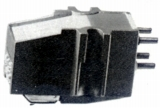
�Hその他
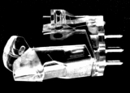
(Astrion)2.MM型
シュアーのMM型特許成立前に発売したMM型。ハイコンプライアンスMM型の先駆け的存在。
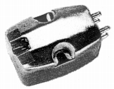
(1(ADC-1))3.MC型
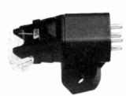
(MC/1.5)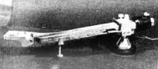
(84/E（プリチャード）)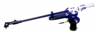
(LMF-2)�V.その他
ヘッドシェル2点とカートリッジキーパー。